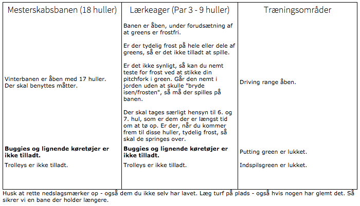

<div class="pages">
  <div data-page="aktuel-banestatus" class="page navbar-fixed toolbar-fixed" >
    <div class="navbar">
      <div class="navbar-inner">
        <div class="left">
          <a href="#" class="link back icon-only"><i class="icon icon-back"></i></a>
          <!-- <a href="#" class="back link icon-only"><i class="icon icon-back"></i></a> -->
        </div>
        <div class="center">Aktuel banestatus</div>
        <!-- <div class="right"></div> -->
        <div class="right">
        </div>
      </div>
    </div>
    <div class="page-content" style="padding-top:45px;">
       <div class="content-block">
          <p><b>Denne side bliver opdateret mindst én gang i døgnet.</b></p>
          
          <p>Velkommen til og god fornøjelse med spillet.
          <br /><br />
            Venlig hilsen<br />
            Hornbæk Golfklub</p>
        </div>
    </div>
    </div>
    </div>
  </div>
</div>
